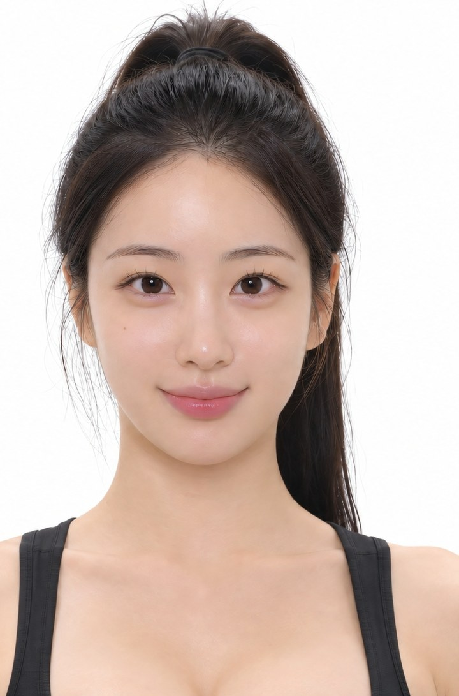

눌러서 시작
화면을 한 번 누르면 소리가 켜집니다

토모리 · 캐릭터 스토리
19
시작하기
소리와 함께 재생됩니다
‹
내부 데모
몰입 영상이 끝나고 대화가 열리면 바로 보여 드려요.
닫기
✦
추천
*
상황
상상
1
⚙ 시연
준비
⏸ 일시정지
⏭ 다음 단계
↺ 처음부터
바로 가기
속도
1×
1.5×
2×
상상하기 자동 선택 (손 안 대고 시연)
각본 칸에서 저절로 만든 목업입니다(mock_build.py). 「제작 중」 표시 = 확정 영상이 없어 프리비즈·컷 배경·콘티로 대신한 자리.